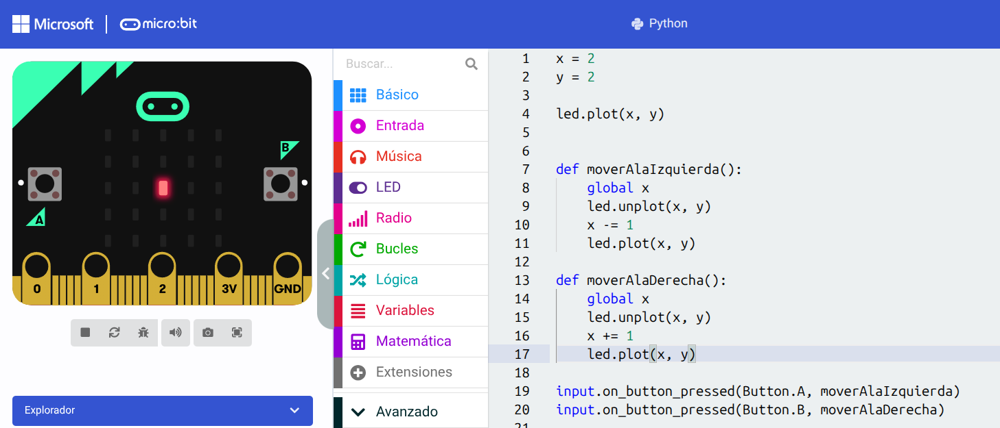

Text
¿Qué necesitamos saber y qué herramientas precisamos?
Una de las principales ventajas de este trayecto formativo es que no necesitas tener ningún conocimiento previo sobre las placas micro:bit ni sobre robótica educativa. El diseño del hardware, sus componentes internos, la matriz de luces, los sensores y la forma de interactuar con el entorno físico son aspectos que aprenderemos desde cero, paso a paso, a lo largo de las lecciones. Este curso está pensado para guiarte en el descubrimiento de la computación física, por lo que no debes preocuparte si nunca has tenido contacto con un microcontrolador.
Sin embargo, dado que el lenguaje de programación elegido para dar vida a nuestros proyectos es MicroPython, tener nociones básicas de Python y de programación en general resulta sumamente útil. Comprender conceptos elementales como qué es una variable, cómo funciona un bucle (while o for), el uso de condicionales (if, else) y la importancia de la indentación en el código te otorgará una ventaja significativa. Si ya entiendes la lógica detrás de estas estructuras, te resultará mucho más natural y fluido concentrarte en cómo aplicarlas para controlar los componentes de la placa, leer los datos de los sensores o diseñar proyectos interactivos.

En cuanto a las herramientas necesarias, el requisito principal es contar con un dispositivo con acceso a internet para utilizar el entorno y emulador en línea. No es obligatorio disponer de la tarjeta física desde el primer día, ya que la plataforma virtual replicará perfectamente su funcionamiento.

En resumen, la curiosidad y las ganas de experimentar son el motor principal para este curso. Si a eso le sumas una base mínima de pensamiento computacional o un acercamiento previo a la sintaxis de Python, tendrás todo lo necesario para aprovechar al máximo cada práctica y llevar tus habilidades de desarrollo al siguiente nivel.